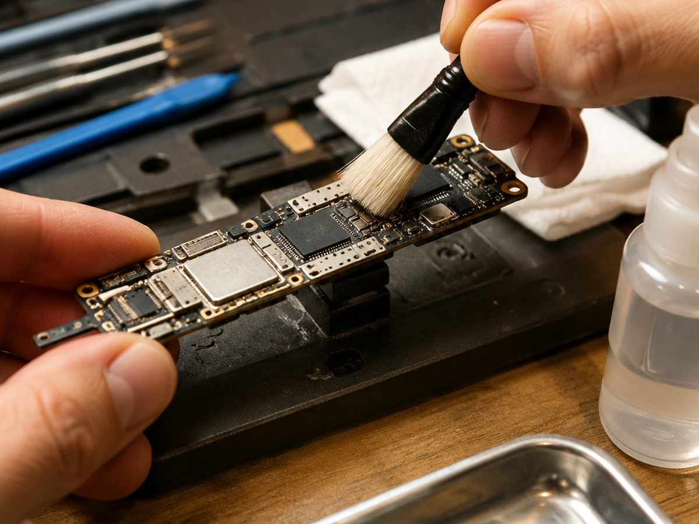

Главная · Услуги
Что ремонтируем
Телефоны и планшеты: от разбитого стекла до платы. Ниже — что именно делаем и в каких случаях это оправдано.
Переклейка стекла
Снимаем разбитое стекло, чистим матрицу от клея и клеим новое на OCA. Дисплей остаётся родной.
Замена стекла с сохранением матрицы
Если матрица целая и нет полос, стекло меняется без замены модуля: дешевле и без потери яркости.
Восстановление после воды
Утопленный телефон разбираем, чистим плату, меняем пробитые элементы. Чем раньше принесли, тем больше шансов.
Замена разъёмов и шлейфов
Разъём зарядки, шлейф кнопок, динамик, микрофон, камера, вибро. Пайка и замена узлом.
Ремонт после неудачных попыток
Приносили аппараты после «сделаю сам» и чужих мастерских: восстанавливаем, что ещё можно спасти.
Диагностика перед работой
Смотрим аппарат, называем причину и стоимость. Если ремонт нецелесообразен, честно говорим об этом.

Замена разъёмов и шлейфов
Разъём зарядки, шлейф кнопок, динамик, микрофон, камера, вибро. Пайка и замена узлом.
Ремонт после неудачных попыток
Приносили аппараты после «сделаю сам» и чужих мастерских: восстанавливаем, что ещё можно спасти.
Диагностика перед работой
Смотрим аппарат, называем причину и стоимость. Если ремонт нецелесообразен, честно говорим об этом.
Ориентиры
Сколько это по времени
| Работа | Срок | Когда нужна |
|---|---|---|
| Переклейка стекла | 1 день | стекло разбито, изображение и тач целы |
| Замена модуля дисплея | 1 день | матрица повреждена, полосы или пятна |
| Разъём зарядки | 1 день | не заряжается, кабель держится плохо |
| Динамик, микрофон, камера | 1 день | не слышно, не снимает, хрипит |
| Восстановление после воды | 1–3 дня | уронили в воду, включали после этого |
Стоимость зависит от модели и наличия детали. Называем её после осмотра, до начала работы.